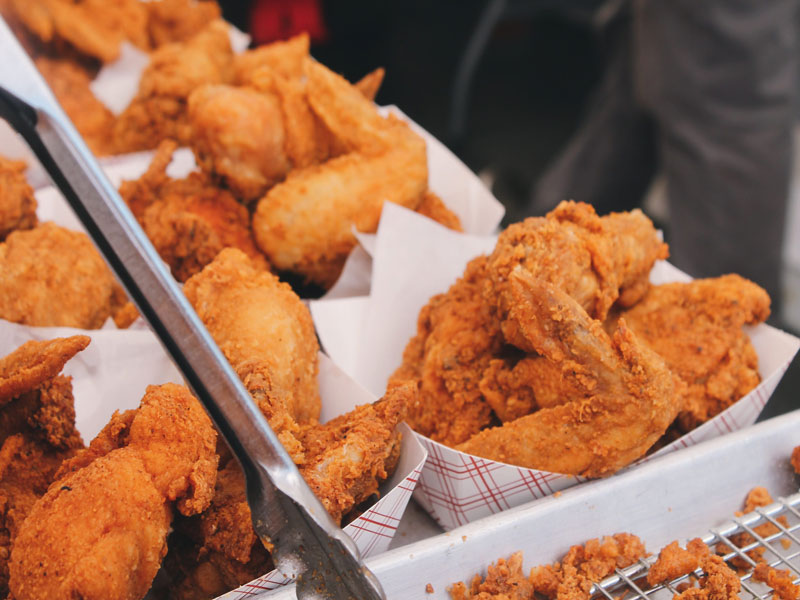

Not is our food good, it's also good-looking! Our patrons often stop to admire our fare with a quick Instagram before digging in. We've collected a few of our favorite shots here.

We start our day at the crack of dawn to bake our own muffins, bread, and dinner rolls. Loaves not used that day are donated to the local food shelter.

People come from all over to enjoy our lovingly made burgers. We grind our own locally-sourced organic beef and turkey so you know it's fresh and free from fillers and other nonsense. Go for one of our creative topping combos or stick with the classics.

Our chef works with local fisherman to pick the freshest the sea has to offer for our daily seafood special. Our Roast Cod Caponata with Roasted Potatoes is an old favorite with our regulars.

We prepare locally sourced chicken using only the freshest spices, with the most skillful hands, to give you our award-winning, mouthwatering chicken wings.

We use organic potatoes cut to perfection to devise our most popular side dish. Not our most extravagant dish, but definitely its own taste to behold.

Our cooks make the freshest tabbouleh using the most finely chopped vegetables. Whether you enjoy eating meat or not, we know you will love this dish.